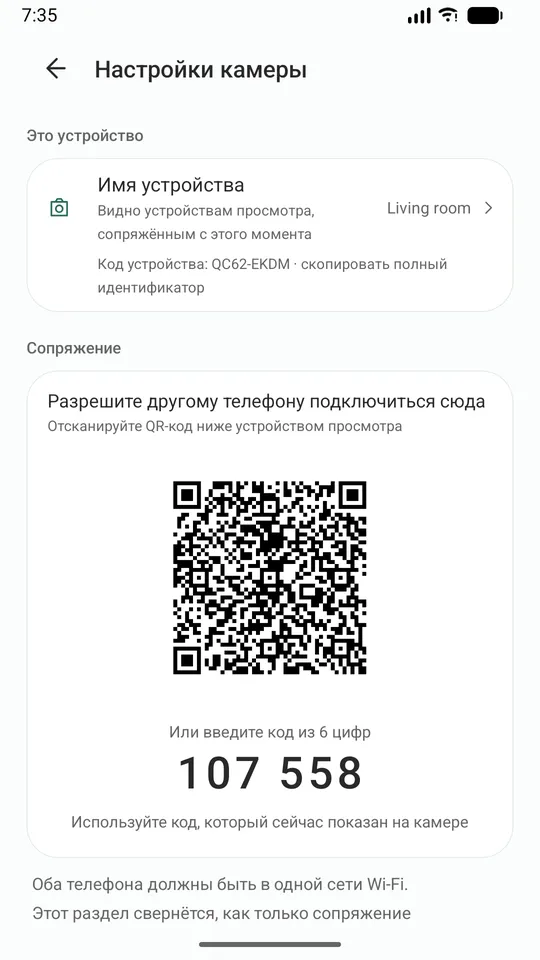
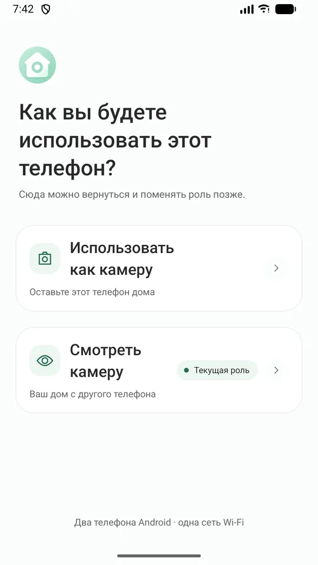
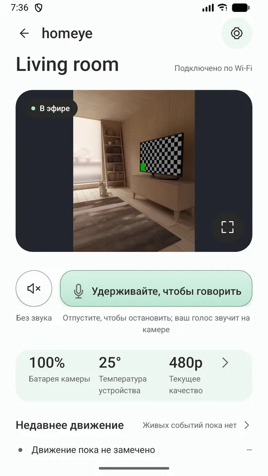
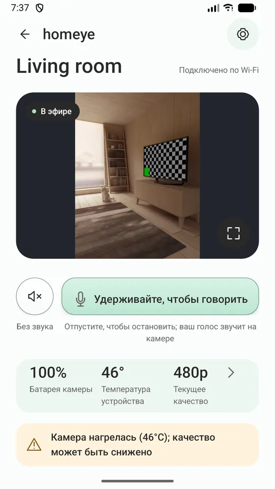
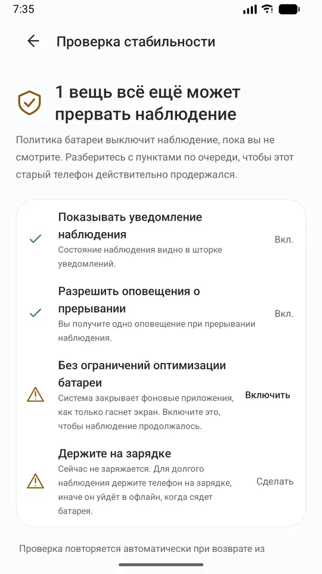
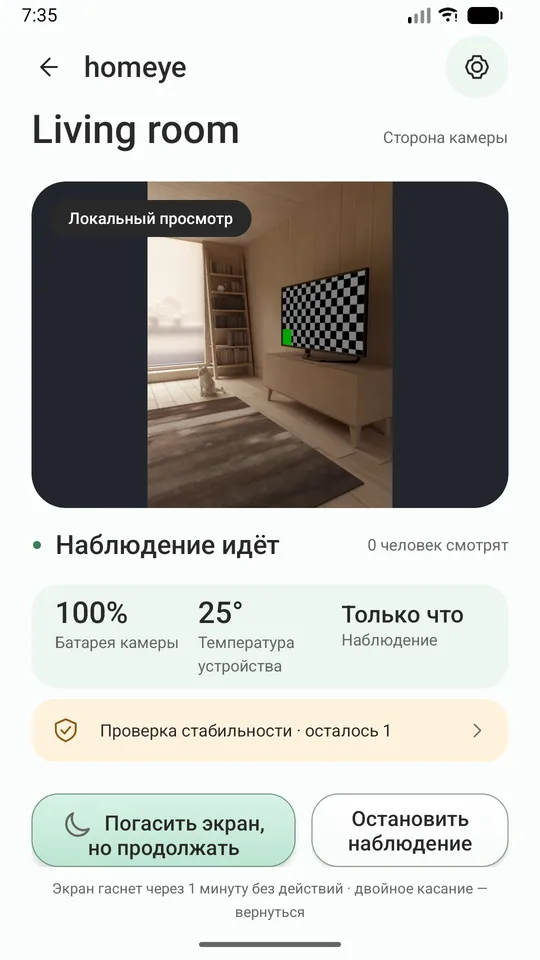

Тот старый Android из ящика — это домашняя камера.
Два телефона, одна сеть Wi-Fi. Живое видео, разговор в обе стороны и оповещения о движении — без аккаунта, без облака посередине и без рекламы.
Тот старый Android-телефон из ящика становится камерой, как только вы включаете его в розетку. Ничего покупать не надо, аккаунт заводить не надо.
Он вас не обманывает
Вы узнаете, когда он отвалится
Вы узнаете, когда он отвалится, — не придётся самому замечать застывшую картинку.
Говорит, почему упало качество
Когда он снижает качество видео из-за нагрева или низкого заряда, он говорит почему. Картинка никогда не мутнеет «просто так».
Проводит по настройкам системы
«Проверка стабильности» перечисляет системные переключатели, которые тихо убивают фоновые приложения, и проводит вас к каждому.
Журнал уходит только туда, куда вы его отправите
Если что-то сломалось, можно выгрузить журнал диагностики и отправить разработчику. Сам по себе журнал никуда не загружается.
Как это работает
- Установите Homeye на оба телефона в одной сети Wi-Fi.
- На старом выберите «Использовать как камеру». Подключите к розетке и направьте куда нужно.
- На своём обычном телефоне выберите «Смотреть камеру» и отсканируйте QR-код со старого.
Сопрягаете один раз — потом просто открываете приложение.

Экраны





Что умеет
- Живое видео и звук, четыре уровня качества с учётом температуры и заряда
- Разговор по нажатию
- Детектор движения с оповещением и миниатюрой на устройстве просмотра
- Телефон-камера может погасить экран и продолжать работать
- Оповещения о низком заряде и перегреве с телефона-камеры
- Зум с устройства просмотра — насколько позволяют объективы того телефона
- 15 языков, по настройке системы
Чего эта версия не умеет — говорим сразу
Работает только в одной сети Wi-Fi Когда вы вне дома и телефон на мобильном интернете, эта версия не подключится. Удалённый доступ требует серверов; он рассматривается, но в этот выпуск не вошёл.
Не обещает «никогда не отваливаться» Android ограничивает фоновую работу для всех, и никто не может этого обещать. Мы обещаем другое: вы узнаете, когда он остановился.
Это не медицинское устройство и не замена присмотру взрослого.
Конфиденциальность (каждую строку можно проверить)
- Видео и звук ходят только внутри вашей сети Wi-Fi, никогда через наши серверы.
- Аккаунт не нужен. Мы не собираем ни почту, ни номер телефона.
- Никакой рекламы и никаких SDK аналитики.
- У нас нет медиасервера и нет записи в облако.
- Личность устройства — пара ключей, созданная в аппаратном хранилище телефона; приватный ключ его никогда не покидает.
- Чтобы устройство просмотра нашло камеру, телефон-камера объявляет в вашей сети Wi-Fi своё имя и отпечаток открытого ключа — и больше ничего.
Что нужно
Два Android-телефона (7.0 или новее) в одной сети Wi-Fi. Телефон-камеру держите на зарядке.